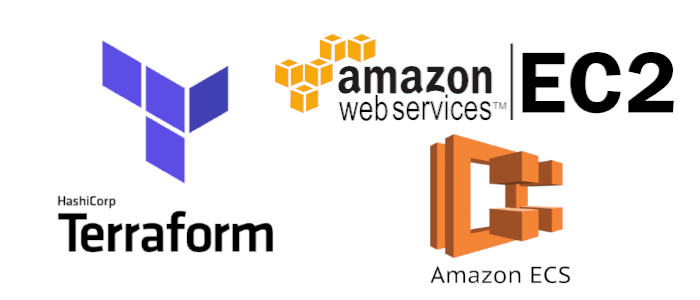

pushing code to a Github branch will trigger a Jenkins pipeline. Jenkins pulls that code from git, runs commands to build it & run unit tests, then builds a docker image, tags it with a version, stores that image in a Docker Hub repository, and then deploys it to k8s cluster using Ansible roles..
June 2021
( Terraform + Ansible )

an application that automates the orchestration and configuration of a multi-tier infrastructure.
a graphical interface is presented to the user with the following functionalities:
Compute functionality: customize a multi-tier architecture by adding, modifying, or removing VMs.
Network functionality: Automate network management (Adding the necessary network devices, as well as the allocation of IP addresses)
The Storage functionality: the "scaling" of VMs by attaching volume blocks and storage blocks
Security functionality: Addition of Security Groups and security rules in order to be able to guarantee the infrastructure and carry out a health check in order to detect vulnerabilities.
an application is dockernized ans deployed to a kubernetes cluster with (grafana, Loki and Prometheus)
In case of an alert, Loki sends a webhook to Jenkins triggering a new Job
created a VPC (Virtual Private Cloud) which will contain an Autoscaling group with EC2 instances. ECS(Amazon Elastic Container Service) will manage the task that will take place on the EC2 instance based on Docker images stored in ECR (Elastic Container Registry).
Building an Azure pipeline that deploys a python application to AKS using Azure DevOps , ACR and terraform.
using Azure DevOps to test,build and deploy a simple web API.

Built an API that has a description of Azure services .

a simple Flask application that generates random APIs for test use.
set up a HA jenkins master in AWS with terraform.

the repository contains terraform template files for alb,ECR,IAM roles, VPC, subnets ... to build ECS clusters .
1- URL Scanner scans a website's URL and determines if it is vulnerable to SQL Injection or Cross Site Scripting (XSS)
2- URL Scanner offers the site's HTTP Header while scanning
3- URL Scanner offers tips how to protect your website against many attacks
4- URL Scanner enables the user to view history of the scans performed and so to view a list of vulnerable websites .